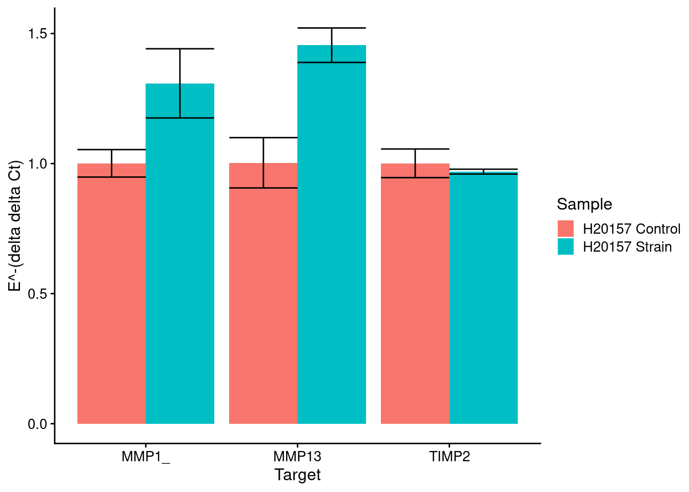
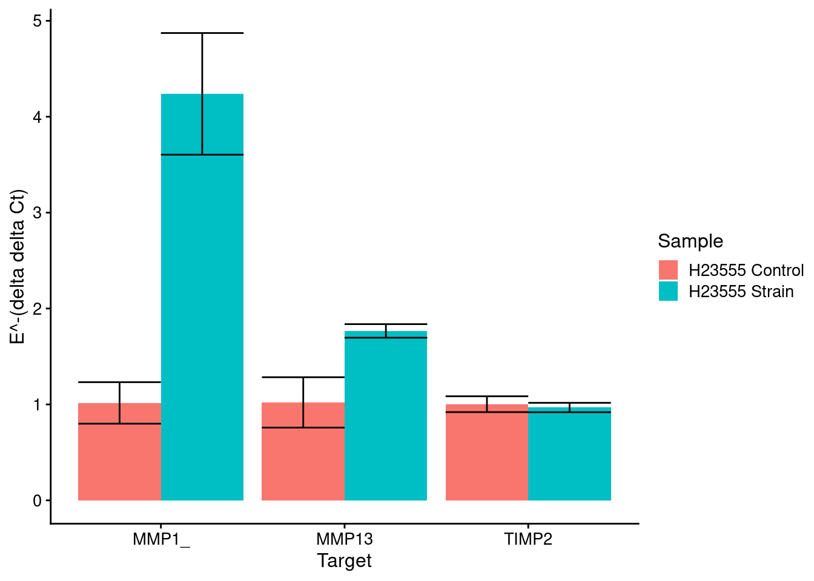
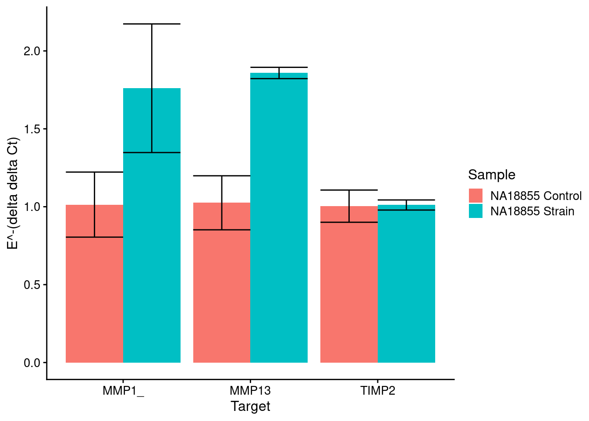

RT-PCR of cartilage hypertrophy markers
Anthony Hung
2021-11-19
Last updated: 2021-11-19
Checks: 7 0
Knit directory: invitroOA_pilot_repository/
This reproducible R Markdown analysis was created with workflowr (version 1.6.2). The Checks tab describes the reproducibility checks that were applied when the results were created. The Past versions tab lists the development history.
Great! Since the R Markdown file has been committed to the Git repository, you know the exact version of the code that produced these results.
Great job! The global environment was empty. Objects defined in the global environment can affect the analysis in your R Markdown file in unknown ways. For reproduciblity it’s best to always run the code in an empty environment.
The command set.seed(20210119) was run prior to running the code in the R Markdown file. Setting a seed ensures that any results that rely on randomness, e.g. subsampling or permutations, are reproducible.
Great job! Recording the operating system, R version, and package versions is critical for reproducibility.
Nice! There were no cached chunks for this analysis, so you can be confident that you successfully produced the results during this run.
Great job! Using relative paths to the files within your workflowr project makes it easier to run your code on other machines.
Great! You are using Git for version control. Tracking code development and connecting the code version to the results is critical for reproducibility.
The results in this page were generated with repository version b0e086c. See the Past versions tab to see a history of the changes made to the R Markdown and HTML files.
Note that you need to be careful to ensure that all relevant files for the analysis have been committed to Git prior to generating the results (you can use wflow_publish or wflow_git_commit). workflowr only checks the R Markdown file, but you know if there are other scripts or data files that it depends on. Below is the status of the Git repository when the results were generated:
Ignored files:
Ignored: .Rproj.user/
Note that any generated files, e.g. HTML, png, CSS, etc., are not included in this status report because it is ok for generated content to have uncommitted changes.
These are the previous versions of the repository in which changes were made to the R Markdown (analysis/RT-PCR.Rmd) and HTML (docs/RT-PCR.html) files. If you’ve configured a remote Git repository (see ?wflow_git_remote), click on the hyperlinks in the table below to view the files as they were in that past version.
| File | Version | Author | Date | Message |
|---|---|---|---|---|
| Rmd | b0e086c | Anthony Hung | 2021-11-19 | add qpcr |
qPCR Analysis for H20157, H23555, NA18855 data
housekeeping <- c("GUSB")
targets <- c("GUSB", "MMP1_", "MMP13", "TIMP2")
samples <- c("H20157 24 2.5",
"H20157 NO STRAIN",
"H23555 24 2.5",
"H23555 NO STRAIN",
"18855 P11+19+9 24H 2.5 ELONG",
"18855 P11+19+9 NOSTRAIN"
)Load in data
#load in results from qpcr experiment, subset for only the three columns we care about for this analysis, and remove all rows with undetermined as the value
results <- read_csv("data/qPCR_results.csv") %>%
dplyr::filter(CT != "Undetermined") %>%
select(Sample = `Sample Name`, Target = `Target Name`, CT, `StandardMolecules`)Parsed with column specification:
cols(
`Sample Name` = col_character(),
`Target Name` = col_character(),
Task = col_character(),
Reporter = col_character(),
Quencher = col_character(),
CT = col_character(),
`Ct Mean` = col_double(),
`Ct SD` = col_double(),
StandardMolecules = col_double()
)results$CT %<>% as.numericFirst, let’s work with the qPCR standards and determine efficiencies
find_efficiency <- function(target, data){
#subset the data to only contain rows with standards of your target
standards <- data %>%
filter(stringr::str_detect(Sample, target))
#fit linear model and calculate efficiency using slope
linearmodel <- lm(CT~StandardMolecules, standards)
slope <- linearmodel$coefficients[2]
efficiency <- 10^(-1/slope)
#plot the linear model along with the data
plot <- standards %>%
ggplot() +
geom_point(aes(x = StandardMolecules, y = CT)) +
geom_abline(slope=linearmodel$coefficients[2], intercept = linearmodel$coefficients[1]) +
ggtitle(target) +
theme_cowplot(12)
#extract rsqured value
rsquared <- summary(linearmodel)$r.squared
return(list("target" = target, "efficiency" = efficiency, plot, "r^2" = rsquared))
}Now, we run the function on all our targets
lapply(targets, find_efficiency, data=results)[[1]]
[[1]]$target
[1] "GUSB"
[[1]]$efficiency
StandardMolecules
1.824531
[[1]][[3]]
[[1]]$`r^2`
[1] 0.9883675
[[2]]
[[2]]$target
[1] "MMP1_"
[[2]]$efficiency
StandardMolecules
1.592744
[[2]][[3]]
[[2]]$`r^2`
[1] 0.9914076
[[3]]
[[3]]$target
[1] "MMP13"
[[3]]$efficiency
StandardMolecules
1.632717
[[3]][[3]]
[[3]]$`r^2`
[1] 0.9684138
[[4]]
[[4]]$target
[1] "TIMP2"
[[4]]$efficiency
StandardMolecules
1.691676
[[4]][[3]]
[[4]]$`r^2`
[1] 0.9988881Now, we can do some analyses using the \(\Delta \Delta\) CT method
#function to find the control CT mean given the name of the control and the target
find_ctrl_mean <- function(data, target, ctrl){
ctrl <- data %>%
filter(Target == target) %>%
filter(Sample == ctrl)
return(mean(ctrl$CT))
}
#function to calculate deltadeltaCT
calc_deltadeltaCT <- function(HKG_ctrl_mean, GOI_ctrl_mean, HKG_efficiency, GOI_efficiency, HKG_obs, GOI_obs){
deltadeltaCT <- GOI_efficiency^(GOI_ctrl_mean - GOI_obs) / HKG_efficiency^(HKG_ctrl_mean - HKG_obs)
return(deltadeltaCT)
}
#function to calculate mean and stdev of deltadeltaCT for a given sample and GOI target combo
calc_stats_deltadeltaCT <- function(GOI, HKG, data, control, sample){
Housekeeping_ctrl_CT_mean <- find_ctrl_mean(data, target=HKG, ctrl=control)
GOI_ctrl_CT_mean <- find_ctrl_mean(data, target=GOI, ctrl=control)
HKG_eff <- unname(find_efficiency(HKG, data)[[2]])
GOI_eff <- unname(find_efficiency(GOI, data)[[2]])
HKG_data <- data %>%
filter(Target == HKG) %>%
filter(Sample == sample)
GOI_data <- data %>%
filter(Target == GOI) %>%
filter(Sample == sample)
deltadeltaCTs <- c()
for(i in 1:min(nrow(HKG_data), nrow(GOI_data))){
deltadeltaCTs <- c(deltadeltaCTs, calc_deltadeltaCT(Housekeeping_ctrl_CT_mean, GOI_ctrl_CT_mean, HKG_eff, GOI_eff, HKG_data$CT[i], GOI_data$CT[i]))
}
mean_ddCT <- mean(deltadeltaCTs)
sdev_ddCT <- sd(deltadeltaCTs)
return(list(mean_ddCT, sdev_ddCT, deltadeltaCTs))
}plot_results <- function(mean_table, sd_table, control, sample_names, sample_order){
targets <- colnames(mean_table)
SD_table_long <- sd_table %>%
tibble::rownames_to_column("Sample") %>%
gather(targets, key=target, value=sd)
mean_table_long <- mean_table %>%
tibble::rownames_to_column("Sample") %>%
gather(targets, key=target, value=mean)
long_data_combined <- merge(mean_table_long, SD_table_long, by=c("Sample", "target"))
long_data_combined$Sample <- factor(long_data_combined$Sample,levels = sample_order)
plot <- ggplot(long_data_combined, aes(x=target, y=mean, fill = Sample)) +
geom_bar(position="dodge", stat="identity") +
geom_errorbar(position=position_dodge(), aes(x=target, ymin=mean-sd, ymax=mean+sd), color="black") +
scale_fill_discrete(name="Sample",
breaks=sample_order,
labels=sample_names) +
labs(x="Target",y= "E^-(delta delta Ct)") +
scale_colour_colorblind() +
theme_cowplot(12)
return(plot)
}Function to calculate significance between measurements
compute_significance <- function(target, sample1, sample2, data, HKG, control){
deltadeltaCTs_sample1 <- log10(calc_stats_deltadeltaCT(GOI=target, HKG=HKG, data=data, control=control, sample=sample1)[[3]])
deltadeltaCTs_sample2 <- log10(calc_stats_deltadeltaCT(GOI=target, HKG=HKG, data=data, control=control, sample=sample2)[[3]])
if(length(deltadeltaCTs_sample1) < 2 | length(deltadeltaCTs_sample2) < 2){
return("NA")
} else{
#perform ftest and use the result to inform your ttest parameters
f_test <- var.test(deltadeltaCTs_sample1, deltadeltaCTs_sample2, alternative="two.sided")
if(f_test$p.value < 0.05){
if(mean(deltadeltaCTs_sample1) < mean(deltadeltaCTs_sample2)){
t_test <- t.test(deltadeltaCTs_sample1, deltadeltaCTs_sample2, alternative="less", var.equal=FALSE)
} else {
t_test <- t.test(deltadeltaCTs_sample1, deltadeltaCTs_sample2, alternative="greater", var.equal=FALSE)
}
} else {
if(mean(deltadeltaCTs_sample1) < mean(deltadeltaCTs_sample2)){
t_test <- t.test(deltadeltaCTs_sample1, deltadeltaCTs_sample2, alternative="less", var.equal=TRUE)
} else {
t_test <- t.test(deltadeltaCTs_sample1, deltadeltaCTs_sample2, alternative="greater", var.equal=TRUE)
}
}
return(t_test$p.value)
}
}
compute_significance_df <- function(target, data, samples_, HKG, control){
df <- matrix(nrow=length(samples_), ncol=length(samples_))
for(i in 1:length(samples_)){
for(j in 1:length(samples_)){
df[i, j] <- compute_significance(target=target, sample1=samples_[i], sample2=samples_[j], data=data, HKG=HKG, control=control)
}
}
df <- data.frame(df)
colnames(df) <- samples_
rownames(df) <- samples_
df_long <- df %>%
tibble::rownames_to_column("Sample1")
return(df_long)
}H20157
Strain markers (control is No Strain)
HKG = GUSB
control <- samples[2]
targets_strain <- targets[2:4]
samples_strain <- samples[1:2]
#initialize a dataframe to store the values for mean, then for sd
means_strain <- data.frame(matrix(ncol = length(targets_strain), nrow = length(samples_strain)))
colnames(means_strain) <- targets_strain
rownames(means_strain) <- samples_strain
sds_strain <- means_strain
for(i in 1:length(rownames(means_strain))){
for(j in 1:length(colnames(means_strain))){
stats_tmp <- calc_stats_deltadeltaCT(GOI=colnames(means_strain)[j], HKG=housekeeping, data=results, control=control, sample=rownames(means_strain)[i])
means_strain[i,j] <- stats_tmp[[1]]
sds_strain[i,j] <- stats_tmp[[2]]
}
}
strain_plot <- plot_results(means_strain, sds_strain, control_strain, c("H20157 Control", "H20157 Strain"), samples[c(2,1)])Note: Using an external vector in selections is ambiguous.
ℹ Use `all_of(targets)` instead of `targets` to silence this message.
ℹ See <https://tidyselect.r-lib.org/reference/faq-external-vector.html>.
This message is displayed once per session.strain_plot
#output tables for significance for all samples for all targets
for(target in targets_strain){
print(target)
print(compute_significance_df(target, results, samples_strain, housekeeping, control))
}[1] "MMP1_"
Sample1 H20157 24 2.5 H20157 NO STRAIN
1 H20157 24 2.5 0.50000000 0.00876913
2 H20157 NO STRAIN 0.00876913 0.50000000
[1] "MMP13"
Sample1 H20157 24 2.5 H20157 NO STRAIN
1 H20157 24 2.5 0.500000000 0.001853665
2 H20157 NO STRAIN 0.001853665 0.500000000
[1] "TIMP2"
Sample1 H20157 24 2.5 H20157 NO STRAIN
1 H20157 24 2.5 0.5000000 0.1937143
2 H20157 NO STRAIN 0.1937143 0.5000000H23555
Strain markers (control is No Strain)
HKG = GUSB
control <- samples[4]
targets_strain <- targets[2:4]
samples_strain <- samples[3:4]
#initialize a dataframe to store the values for mean, then for sd
means_strain <- data.frame(matrix(ncol = length(targets_strain), nrow = length(samples_strain)))
colnames(means_strain) <- targets_strain
rownames(means_strain) <- samples_strain
sds_strain <- means_strain
for(i in 1:length(rownames(means_strain))){
for(j in 1:length(colnames(means_strain))){
stats_tmp <- calc_stats_deltadeltaCT(GOI=colnames(means_strain)[j], HKG=housekeeping, data=results, control=control, sample=rownames(means_strain)[i])
means_strain[i,j] <- stats_tmp[[1]]
sds_strain[i,j] <- stats_tmp[[2]]
}
}
strain_plot <- plot_results(means_strain, sds_strain, control_strain, c("H23555 Control", "H23555 Strain"), samples[c(4,3)])
strain_plot
#output tables for significance for all samples for all targets
for(target in targets_strain){
print(target)
print(compute_significance_df(target, results, samples_strain, housekeeping, control))
}[1] "MMP1_"
Sample1 H23555 24 2.5 H23555 NO STRAIN
1 H23555 24 2.5 0.5000000000 0.0003622303
2 H23555 NO STRAIN 0.0003622303 0.5000000000
[1] "MMP13"
Sample1 H23555 24 2.5 H23555 NO STRAIN
1 H23555 24 2.5 0.500000000 0.008252139
2 H23555 NO STRAIN 0.008252139 0.500000000
[1] "TIMP2"
Sample1 H23555 24 2.5 H23555 NO STRAIN
1 H23555 24 2.5 0.5000000 0.2874614
2 H23555 NO STRAIN 0.2874614 0.5000000NA18855 alone
Strain markers (control is No Strain)
HKG = GUSB
control <- samples[6]
targets_strain <- targets[2:4]
samples_strain <- samples[5:6]
#initialize a dataframe to store the values for mean, then for sd
means_strain <- data.frame(matrix(ncol = length(targets_strain), nrow = length(samples_strain)))
colnames(means_strain) <- targets_strain
rownames(means_strain) <- samples_strain
sds_strain <- means_strain
for(i in 1:length(rownames(means_strain))){
for(j in 1:length(colnames(means_strain))){
stats_tmp <- calc_stats_deltadeltaCT(GOI=colnames(means_strain)[j], HKG=housekeeping, data=results, control=control, sample=rownames(means_strain)[i])
means_strain[i,j] <- stats_tmp[[1]]
sds_strain[i,j] <- stats_tmp[[2]]
}
}
strain_plot <- plot_results(means_strain, sds_strain, control_strain, c("NA18855 Control", "NA18855 Strain"), samples[c(6,5)])
strain_plot
#output tables for significance for all samples for all targets
for(target in targets_strain){
print(target)
print(compute_significance_df(target, results, samples_strain, housekeeping, control))
}[1] "MMP1_"
Sample1 18855 P11+19+9 24H 2.5 ELONG
1 18855 P11+19+9 24H 2.5 ELONG 0.50000000
2 18855 P11+19+9 NOSTRAIN 0.02099169
18855 P11+19+9 NOSTRAIN
1 0.02099169
2 0.50000000
[1] "MMP13"
Sample1 18855 P11+19+9 24H 2.5 ELONG
1 18855 P11+19+9 24H 2.5 ELONG 0.50000000
2 18855 P11+19+9 NOSTRAIN 0.01903639
18855 P11+19+9 NOSTRAIN
1 0.01903639
2 0.50000000
[1] "TIMP2"
Sample1 18855 P11+19+9 24H 2.5 ELONG
1 18855 P11+19+9 24H 2.5 ELONG 0.500000
2 18855 P11+19+9 NOSTRAIN 0.437935
18855 P11+19+9 NOSTRAIN
1 0.437935
2 0.500000
sessionInfo()R version 3.6.1 (2019-07-05)
Platform: x86_64-pc-linux-gnu (64-bit)
Running under: Scientific Linux 7.4 (Nitrogen)
Matrix products: default
BLAS/LAPACK: /software/openblas-0.2.19-el7-x86_64/lib/libopenblas_haswellp-r0.2.19.so
locale:
[1] LC_CTYPE=en_US.UTF-8 LC_NUMERIC=C
[3] LC_TIME=en_US.UTF-8 LC_COLLATE=en_US.UTF-8
[5] LC_MONETARY=en_US.UTF-8 LC_MESSAGES=en_US.UTF-8
[7] LC_PAPER=en_US.UTF-8 LC_NAME=C
[9] LC_ADDRESS=C LC_TELEPHONE=C
[11] LC_MEASUREMENT=en_US.UTF-8 LC_IDENTIFICATION=C
attached base packages:
[1] stats graphics grDevices utils datasets methods base
other attached packages:
[1] cowplot_1.1.0 ggsignif_0.5.0 ggthemes_4.2.0 magrittr_2.0.1
[5] plyr_1.8.6 forcats_0.4.0 stringr_1.4.0 dplyr_1.0.2
[9] purrr_0.3.4 tidyr_1.1.2 tibble_3.0.4 ggplot2_3.3.3
[13] tidyverse_1.3.0 readr_1.3.1
loaded via a namespace (and not attached):
[1] tidyselect_1.1.0 xfun_0.8 haven_2.3.1 colorspace_2.0-0
[5] vctrs_0.3.6 generics_0.0.2 htmltools_0.5.0 yaml_2.2.1
[9] rlang_0.4.10 later_1.1.0.1 pillar_1.4.7 withr_2.3.0
[13] glue_1.4.2 DBI_1.1.0 dbplyr_1.4.2 modelr_0.1.8
[17] readxl_1.3.1 lifecycle_0.2.0 munsell_0.5.0 gtable_0.3.0
[21] workflowr_1.6.2 cellranger_1.1.0 rvest_0.3.6 evaluate_0.14
[25] labeling_0.4.2 knitr_1.23 httpuv_1.5.1 fansi_0.4.1
[29] broom_0.7.0 Rcpp_1.0.5 promises_1.1.1 backports_1.1.10
[33] scales_1.1.1 jsonlite_1.7.2 farver_2.0.3 fs_1.3.1
[37] hms_0.5.3 digest_0.6.27 stringi_1.4.6 rprojroot_2.0.2
[41] grid_3.6.1 cli_2.2.0 tools_3.6.1 crayon_1.3.4
[45] whisker_0.3-2 pkgconfig_2.0.3 ellipsis_0.3.1 xml2_1.3.2
[49] reprex_0.3.0 lubridate_1.7.9 assertthat_0.2.1 rmarkdown_1.13
[53] httr_1.4.2 rstudioapi_0.13 R6_2.5.0 git2r_0.26.1
[57] compiler_3.6.1